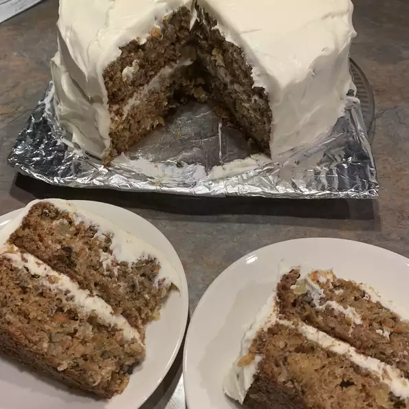

Home
Carrot cake

Description:
If you like carrot cakes as much as me, you are going to
enjoy the deliciusness of this beauty
This recipe considers a cake for around 15 to 18 servings.
It takes around 30 mins to prepare, 55 mins to cook and another
35 mins for de frosting, the nutritional value is: 616 calories;
protein 6.2g; carbohydrates 83.5g; fat 30.2g;
cholesterol 70.4mg; sodium 540.4mg.
Ingredients:
- 2 cups white sugar
- 3/4 cup vegetable oil
- 3 eggs
- 1 teaspoon vanilla extract
- 3/4 cup buttermilk
- 2 cups grated carrots
- 1 cup flaked coconut
- 1 (15 ounce) can crushed pineapple, drained
- 2 cups all-purpose flour
- 2 teaspoons baking soda
- 2 teaspoons ground cinnamon
- 1- 1/2 teaspoons salt
- 1 cup chopped walnuts
- 1/2 cup butter
- 1 (8 ounce) package cream cheese
- 1 teaspoon vanilla extract
- 4 cups confectioners sugar
Steps:
- Preheat oven to 350 degrees F (175 degrees C). Grease a 9x13
inch baking pan. Set aside.
- In a large bowl, mix together sugar, oil, eggs, vanilla, and
buttermilk. Stir in carrots, coconut, vanilla, and pineapple.
In a separate bowl, combine flour, baking soda, cinnamon, and
salt; gently stir into carrot mixture. Stir in chopped nuts.
Spread batter into prepared pan.
- Bake for 55 minutes or until toothpick inserted into
cake comes out clean. Remove from oven, and set aside
to cool.
- In a medium mixing bowl, combine butter or margarine,
cream cheese, vanilla, and confectioners sugar. Blend until
creamy. Frost cake while still in the pan.